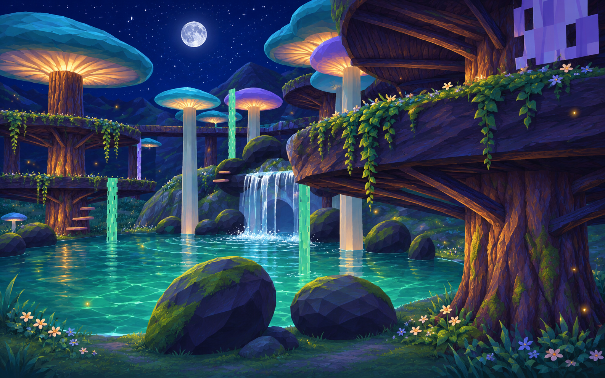
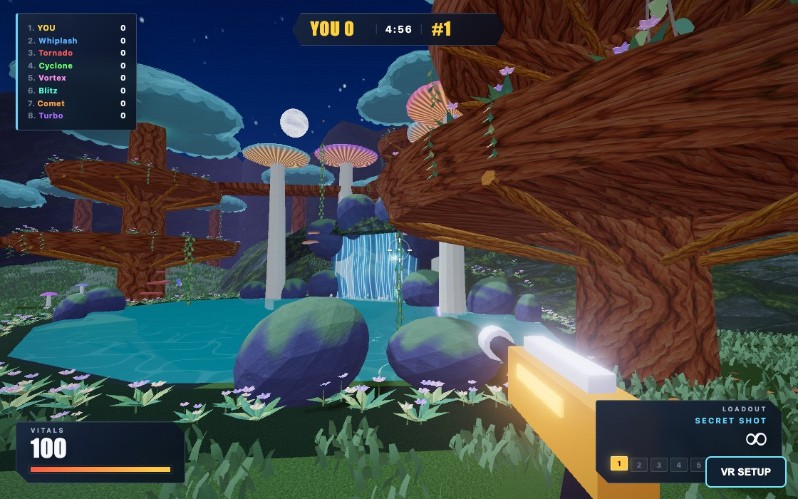

Mycelium Grove after dark
Amber mushroom gills and fireflies light the path around the jade pond. Compare the playable grove with its original nighttime lighting, or switch maps to see the shared water pass.
Final implementationOriginal game
Explore the grove in 3D · Fortress Falls study · Sunken Reef study · Notes and verification
Moonlit forest concept

Generated paintover of the original pond view.
In a match

Three.js r187, high graphics, shadows and bloom.